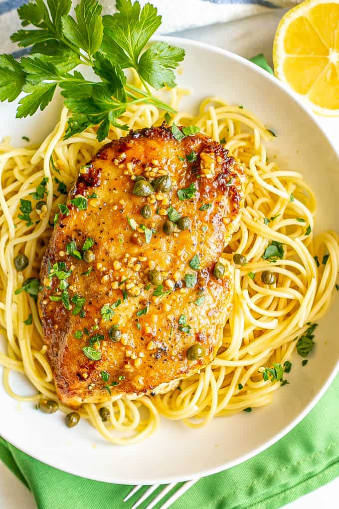

Chicken Picatta

Chicken cutlets with capers and buttery lemon sauce
This is one of my favorite Italian recipes. If you are looking to avoid red sauce
or those which are heavy in dairy, this is a great alternative. Served with spaghetti
or linguini pasta.
Ingredients
- 4 chicken breasts pounded to 1/2 inch thick or less
- 1/2 cup flour
- 1 lemon zested
- Olive oil for frying
- salt and pepper to taste
For the Sauce
- 1/4 cup butter
- 1 1/2 tbsp flour
- 1 cup chicken broth
- 1/2 lemon juiced (1 1/2 tbsp)
- 1/2 cup white wine (or chicken stock)
- 3 tbsp capers, drained
- 2 tbsp fresh parsley, chopped
Directions
- Combine the flour, lemon zest, salt and pepper. Dredge the chicken in flour mixture.
- Heat olive oil over medium high heat and cook chicken (in batches if needed), remove.
- In the same pan, melt 1/4 cup butter and add flour to create roux. Whisk until smooth. Cook 1-2 min.
- Gradually stir in chicken broth, whisking after each addition until smooth.
- Add lemon juice, white wine and capers. Simmer 3 min, whisking occasionally.
- Add chicken back to pan and simmer 2-3 min. Stir in parsley and serve over pasta.